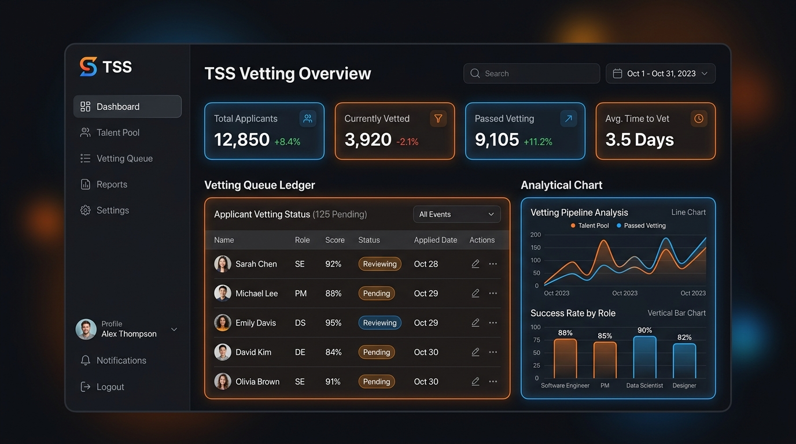
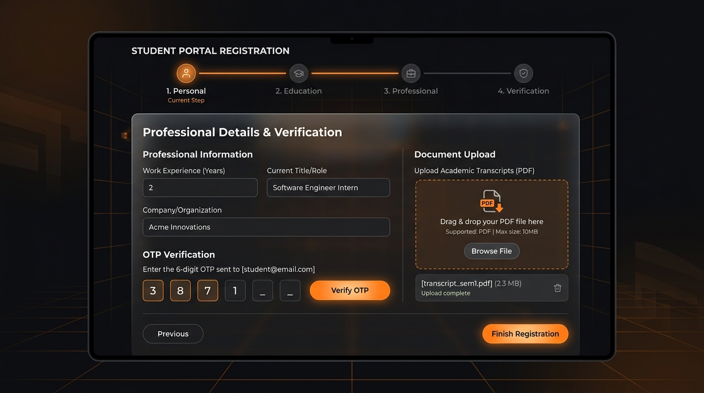
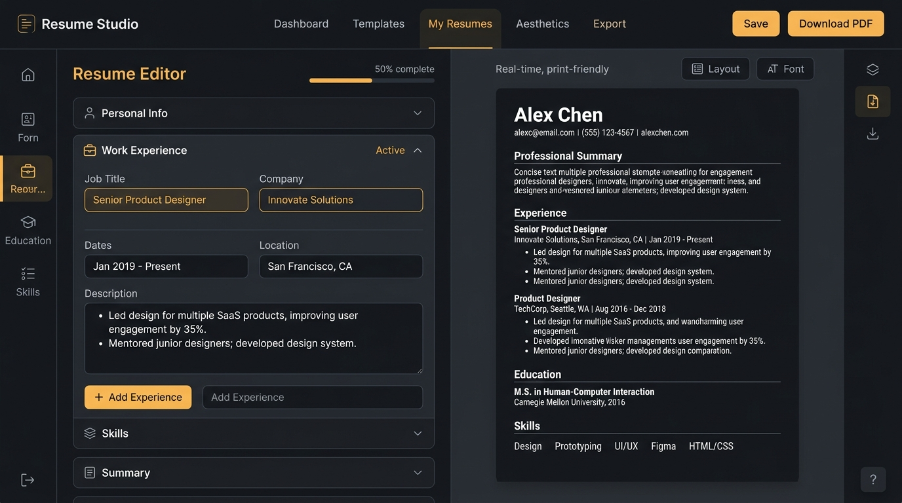

We are transitioning from a manual community network into a high-trust, automated ecosystem. Track verification status, customize resumes, and manage candidates securely.

Verified Members
Campuses Reached
Placements Made
Hour Vetting Turnaround
The TSS platform has been engineered to secure credentials, build ATS-grade resumes, and fast-track HR review loops.

Candidates can sign up in less than 2 minutes using our mobile-friendly stepper. Real-time validation keeps candidate profiles accurate and opens access to partner openings.
Administrators manage the vetting queue, review resume credentials, download spreadsheet reports, and log recruiter interactions.

TSS members get free access to a customized, print-optimized resume builder that implements verified standards for industry resumes.
Every vetted TSS member receives a unique Virtual ID card that unlocks locked partner channels. Create a preview below.
From a localized student network to a comprehensive pan-India talent validation platform.
Started in Karimnagar, Telangana. Built as a closed communication network for tech students to share verified resource pipelines and project insights.
Expanded community operations across Andhra Pradesh and Telangana. Created specialized student chapters and launched offline workshop networks.
Transitioned into a fully structured credential ecosystem. Launched the official TSS platform with automated vetting, mock verification, and Resume Studio.
Join the 20,000+ verified members currently leveraging TSS Member IDs to accelerate their career preparation.
Launch the TSS Web App